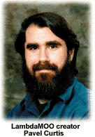

At first, you find yourself trapped in a dark closet. You have no idea where you are. Groping wildly, you're able to find a doorknob, and compelled to escape from the closed space, you turn it.
You stumble out into the glittering anteroom of a giant mansion. The floor is made of black-and-white tiled marble, and the windows stretch from floor to ceiling. You glance through the window to your left. You see a verdant meadow, dotted with yellow and purple flowers. People take part in a country fair a hundred yards away. They loll in the grass and dance around a Maypole. You peek through the window to your right. You appear to be at the edge of a white, jagged cliff, with a magnificent surf crashing below. A path leads to the water.
Do you want to explore on by yourself, or join the party by the grass? You're bewildered by the choices. Suddenly, you look ahead of you at the sweeping marble staircase. A shining vision -- a woman dressed in white and gold with flowers in her hair, more beautiful than anyone you've ever seen before -- is rushing toward you with open arms. She gives you a giant hug. "My name is Samantha!" she says breathlessly. "I'm so glad to see you!."
Suddenly you realize you can't talk back. You've forgotten all your facilities for speech and you can't even remember who you are anymore.
You haven't died. You're not on drugs. You're in a MOO and your corporeal self, glommed to your monitor, forgot to memorize any speech commands or set a character description for yourself.
To new users, they seem like odd acronyms: MUDs, MOOs, MUSHs, MUCKs. Foreign lands with awkward names, far from the point-and-click graphic safety of the Web. But fear not. If you've wanted to participate in these online text-based alternative worlds, but were turned off by the proliferation of Dungeons & Dragons knockoffs or urban sprawls a la science-fiction writer William Gibson, dust off your Telnet software and try plugging in again. MUDs and their kin are growing increasingly diverse and sophisticated. In these locales, beyond the passivity of Usenet lurking or Web browsing, you can actively seek out and create a world where your interests and imagination flourish. Want to research and chat with fellow biologists or explore Hispanic culture en Espanol? You'll find it in a MUD or MOO. But be ready to waste plenty of time in the process.
Jim Aspnes, while a student at Carnegie Mellon University in '89, created the world of the modern Multi-User
Dungeon one weekend when he sat down and wrote the code for TinyMUD, the very first MUD. TinyMUD was also the
first "social" MUD. Characters could actually walk around the virtual world at will and chat with one another instead
of being programmed to scoop up gold coins or kill orcs. In time, MUDs officially came to be known as Multi-User
Dimensions, Multi-User Discussions or Mauve Ugly Ducks.

In the years that followed, more enthusiasts Telnetted to servers around the world to conquer new landscapes,
slay dragons and engage in that infamous activity now known as TinySex. In 1991, Pavel Curtis, a researcher at
Xerox PARC in Palo Alto, Calif., decided to take the MUD concept one step further. Curtis felt that the whole MUD
setup might be more interesting and function more fluidly if users were permitted to actively create their
surroundings. So he developed the then experimental LambdaMOO, with MOO standing for "MUD-object-oriented."
That means the MUD is developed in an object-oriented programming language, which creates "objects" that link to
one another and produces larger, more functional objects. In a MOO, for example, object-oriented programming
might facilitate the building of a "room" or the making of a character's "tool" (like a lantern or ESP) with more
flexibility.
|
MOOs to Check Out
BayMOO
BioMOO
Butterfly MOO
ChibaMOO
Digital Wasteland
Diversity University MOO
MOO Français
Global Village
LambdaMOO
MediaMOO
MOOtiny
Sanctuary
SchoolnetMOO
WAXweb MOO |
Curtis no longer has time to go online himself so he's hired a staff of 10 "wizards," or online MUD directors, to offer tech support, mediate disputes and enforce justice. But like any emerging democracy, life on LambdaMOO is often anarchic and sometimes nasty. "It's not a nice place," Curtis says.
Entering the world of a MOO is a large time commitment, so it's important to choose a virtual world where you'll
feel at home. This usually involves some trial-and-error exploration, especially since there are so many MOOs to
choose from.
Some MOOs can be accessed through the Web, although to experiencedusers, these MOOs are more like "MOO-Lite," with more formal marching around and less free wandering. If the Web page says "click here," you have to
"click here." You don't have the opportunity to stop and say, you know, I'd really like to be eating a pomegranate
right now, and create one on the spot. On the other hand, it's good to use the Web as a starting point if you want to
get a quickie tour of a MOO or if you're a beginner who's uncomfortable with a MOO's commands. (You can find a
long list of Web-based MOOs using Yahoo.) If you're initially put off by the relentlessly dull ASCII interface, just
wait -- you'll be surprised at how fast you get used to it. For the real thing, be sure you have a solid Telnet account.
Next, think hard about what kind of virtual communityyou want to join. Do you want to role play? Share a
specific interest with your peers? Create flora, fauna and architecture for users to pick up or admire? Explore your
gender or sexual orientation? Most MOOs include at least one of these elements and many include all. Be prepared to
spend several hours poking around the 'net before you find one that thrills you or makes you feel comfy. (See
Sidebar)
Some points to consider:
*Current users: How many are there? Is the lag time between your posts unbearably slow because of all the
bottlenecks, or is the place so empty you find yourself emoting to no one? Look for MOOs that still welcome new
users, but have a fair number of active ones (25 to 200 is good) so that there's always someone there with whom
you can interact.
*The MOO's tone: You probably want to avoid a MOO filled with immature users who shout at everyone and curse
at "friends" in the public rooms. Cliquishness is equally unpleasant. It doesn't feel good to be ignored in a social
setting where everyone else is either laughing, talking or flirting.
*Character descriptions of current users: Are people playing "themselves" or are they role playing like
character players at Ars Magica: "Viviane managed to pass the Gauntlet that Athanasius set for her, but Athanasius
believed her to still be too soft' to be a proper Tytalus." If you want to do some pseudo-medieval role playing, then
this MOO is fine. But if your goal is to talk to someone about educational reform, then push on.
*Rating the writing: Too often, a promising MOO is damaged by poor descriptive text. Look thoroughly around
the site. Are the descriptions well-written and easy to follow? Do they spark your imagination? How far can you
travel without going in a circle? Notice the number of objects that you can pick up or read. Take time to do it, and
see what's inside. A good MOO, with interested wizards and players, will make sure that every little experience is
worthwhile.
*Is there a human host? Look for a friendly wizard/administrator/helper logged on to answer any questions.
(Follow MOO-iquette, though, and don't bug wizards or fellow players with questions you can answer through the
MOO's online help.) Commands to move, speak and create shouldn't vary significantly from other MOOs.
Also watch out for text-scrolling problems. Text that moves too fast on the terminal screen will leave you
scrambling to remember what you typed just two minutes earlier; text that doesn't break well will force someone
else's unwanted pontificating into your sentences.
Considering rapid advances in software and connectivity, text-based VR may appear an anachronism. What will
happen to MOOs and MUDS in an increasingly Web and multimedia-based Internet?
LambaMOO creator, Curtis, thinks the future looks good for MOOs and MUDs. He foresees their continuing
integration with the Web and more sophisticated online scenarios. In day-to-day online communication, Curtis
speculates that many businesses will offer online "commerce MUDs," so customers and shopkeepers can interact in
real-time. But he doesn't think that more advanced technology will wipe out the worlds MOOers love. "Text-based
real-time communication is living literature," he says.